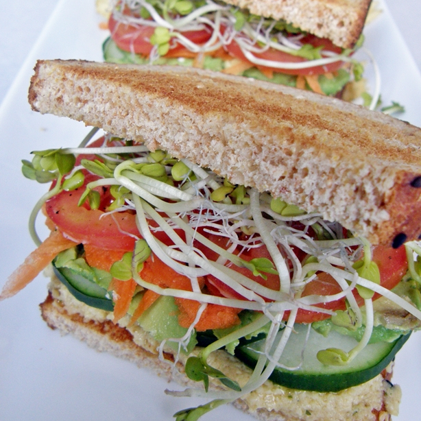
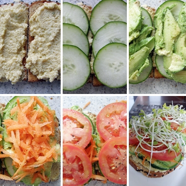
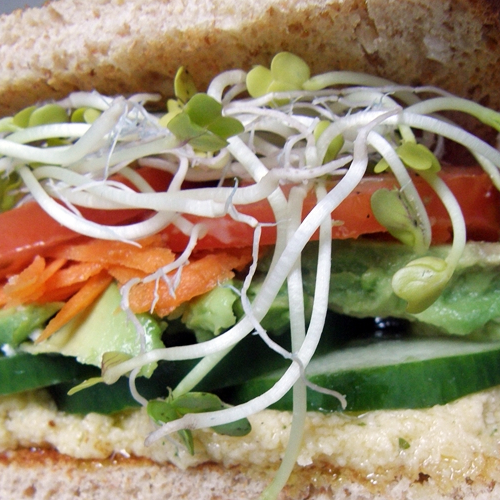

Sandwich con hummus y vegetales
- 
- 
- 
Ingredientes
- 2 rebanadas de pan integral tostadas
- 2 cdas hummus
- 1/2 palta madura
- 4 rebanadas de tomate
- Brotes de soja o alfalfa
- Sal y pimienta a gusto
Elaboración
- Tostar el pan.
- Cubrir con un pan con el hummus.
- Agregar el pepino, palta, zanahoria rallada, tomate, germinados y sazonar al gusto con sal y pimienta.